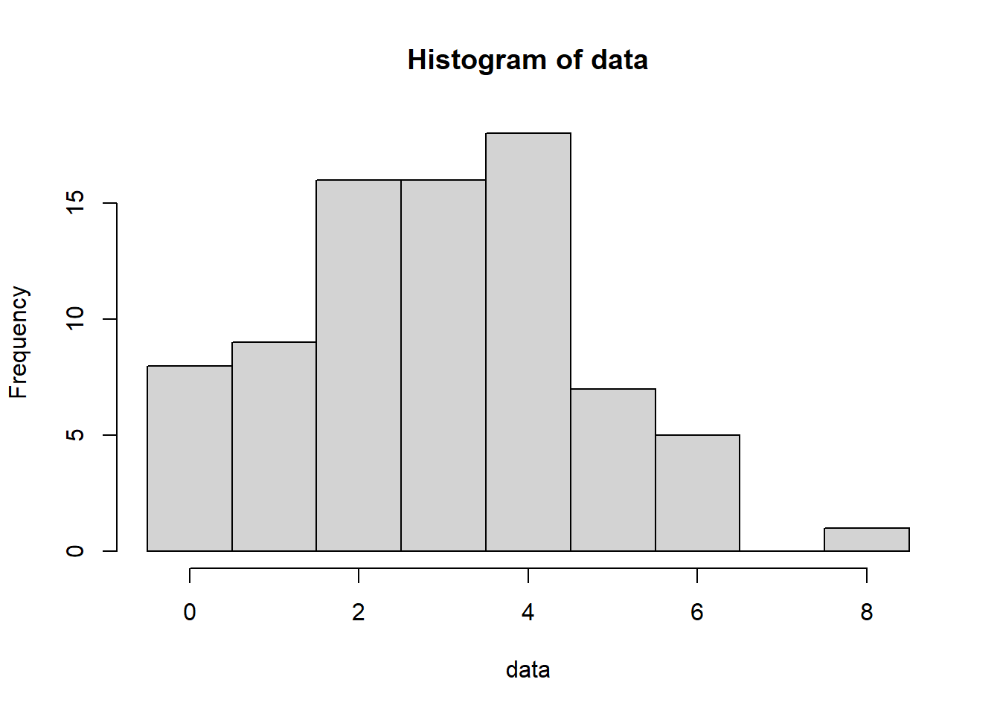
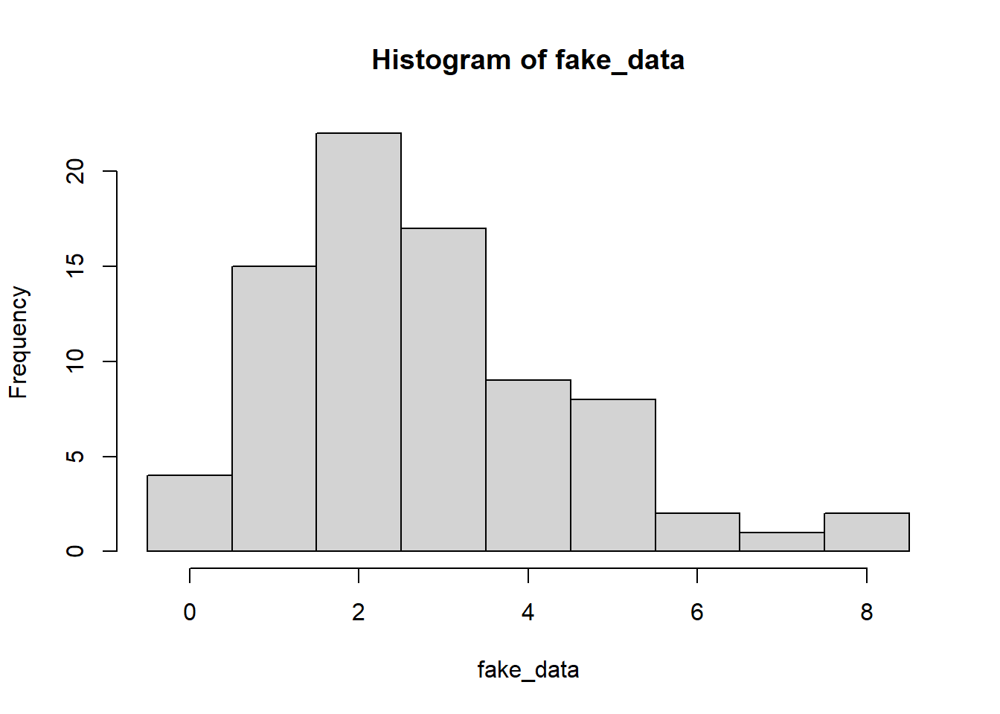
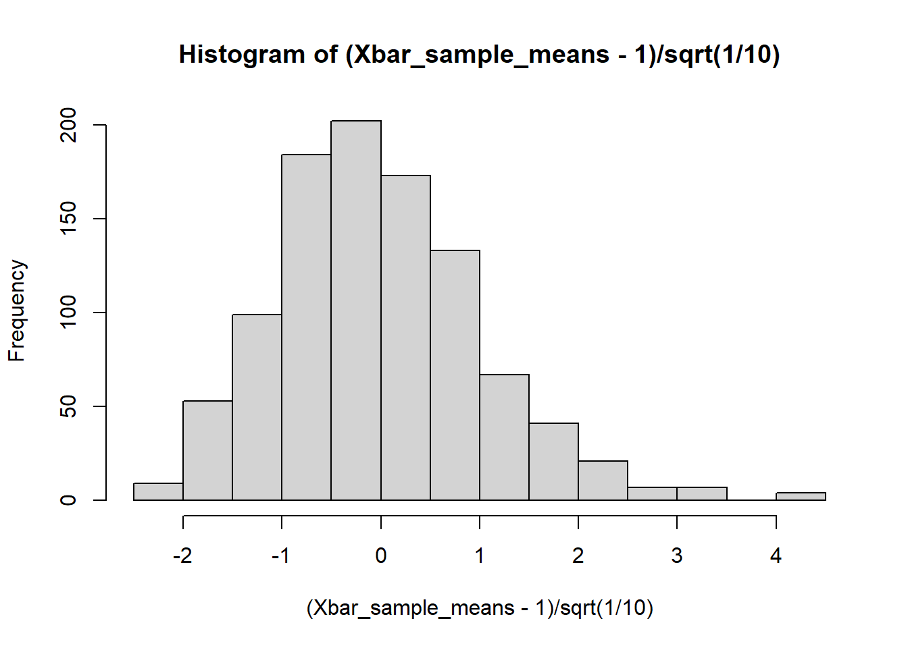
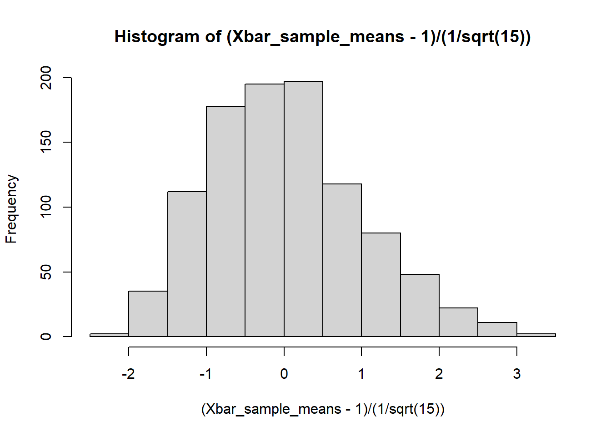
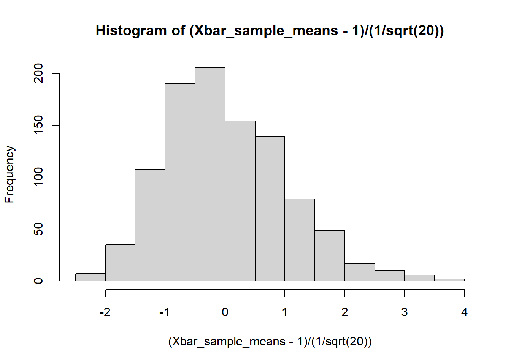
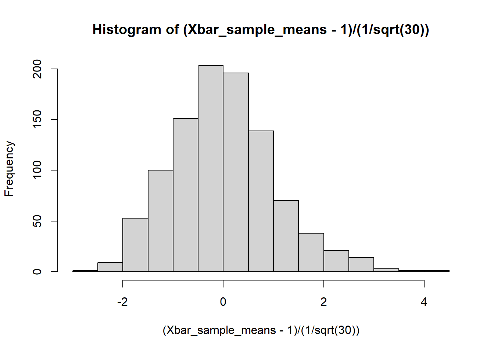
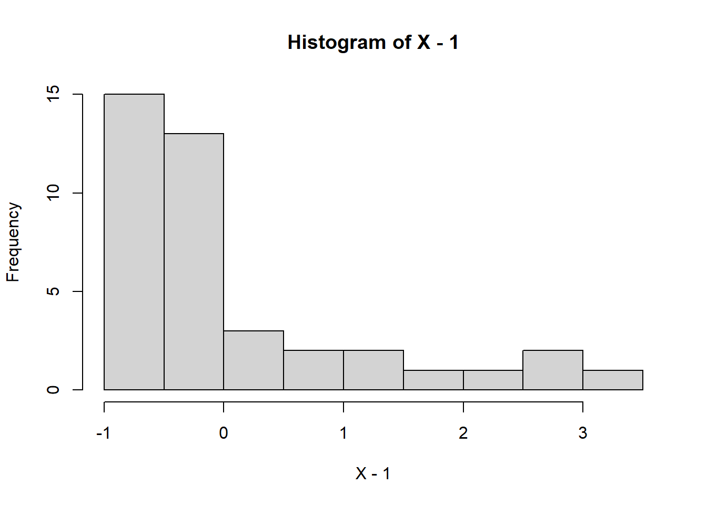
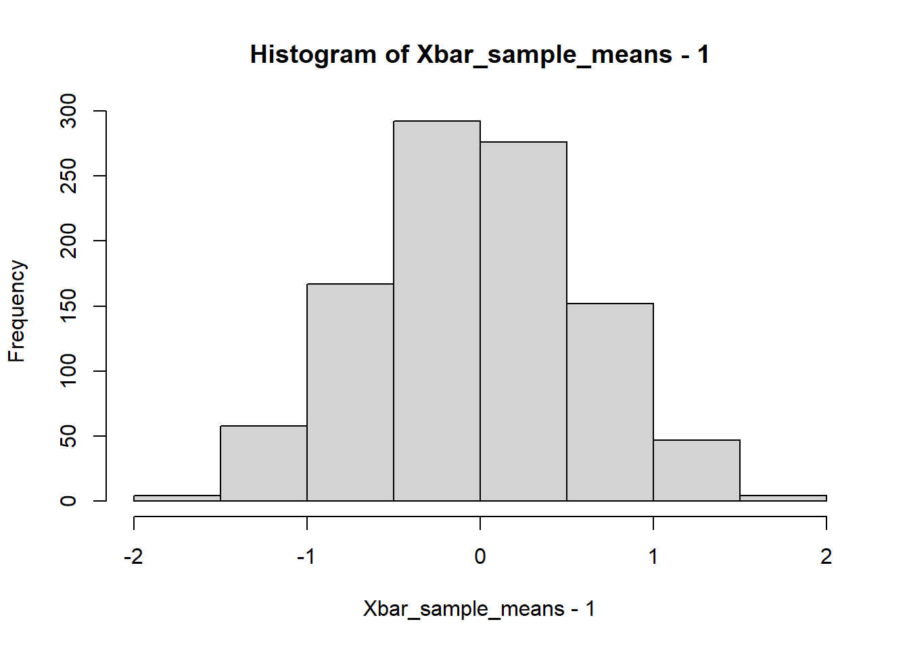
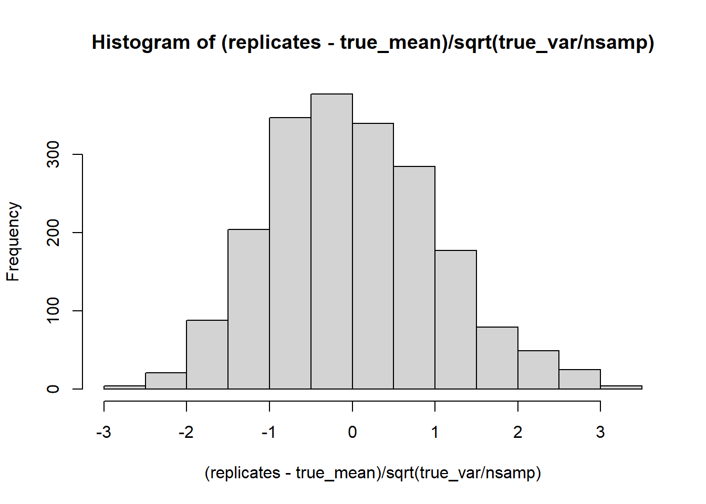

# The first argument to qnorm is a vector of the quantiles we want (given as probabilities).
# Asking for the 2.5% and 97.5% quantiles.
qnorm( c(0.025, 0.975), mean=1, sd=1/5)[1] 0.6080072 1.3919928In these notes, we will continue our discussion of the problem of estimation.
After this lesson, you will be able to
Last week, we began discussing the problem of estimation, where we are interested in determining the value of some quantity out there in the world (most commonly the parameter of a distribution). We focused in our previous lectures on point estimation, where we are concerned with simply giving a single number as our “best guess” of the true value of the parameter of interest. Still, we mentioned several times in lecture the fact that our “best guess”, i.e., our estimate, would itself be random because the data is random. The result of this randomness is that for any estimate that we might produce, we have level of “uncertainty” associated to that estimate.
Suppose we are working for the Department of Natural Resources (DNR), tasked with estimating how many fish live in Lake Mendota. Our colleagues in ecology go out in the field and come up with an estimate of 10,848 fish in Lake Mendota (note: this number is completely fictional; indeed, I am not even sure that it is of the correct order of magnitude).
Presumably, the exact number of fish in Lake Mendota changes from day to day, week to week, month to month, etc. So perhaps we would not object much if someone came along and revised this number from, say, 10,848 to 10,306. Perhaps we would not even object much if this estimate were revised by a thousand fish in one direction or the other. Still, there are a range of values around 10,848 that seem like “reasonable” guesses, and there are other values that seem pretty clearly “unreasonable”. For example, revising our estimate from approximately 10,000 fish down to 1,000 fish seems extreme.
What we would like, ideally, is to provide a range of values for our estimate that capture our level of uncertainty (or, conversely, our level of certainty, i.e., … confidence) about this number. Specifically, we would like to produce an interval that is somehow “usually” correct.
But what does it mean for an interval to be “usually right”?
Suppose we observe a particular value for our statistic \(S\). Remember, \(S = S(X_1,X_2,\dots,X_n)\) is a function of our data and estimates our parameter of interest, say, \(\theta\). We’ll assume further, for simplicity, that \(\mathbb{E} S = \theta\). That is, our estimator is unbiased for \(\theta\). Note that this isn’t always the case, but further discussion of the case where \(S\) is biased will have to wait (and there’s no need to make things more complicated than they already are!).
We would like to be able to give an interval of values around our observed value of \(S\) such that \(\theta\) is (with some level of certainty, anyway), in that interval.
That is, roughly speaking, the definition of a confidence interval. We’ll put that definition on firmer ground soon, but let’s start by building some intuition and recalling some ideas from earlier in the semester.
First things first: \(S = S(X_1,X_2,\dots,X_n)\) is a random variable, thus it has a distribution.
But let’s imagine for now that we knew the true distribution of \(S\).
Example: for the sake of easy math, let’s say that \(S\) is the sample mean of \(n=25\) independent draws from \(\operatorname{Normal}(\mu=1, \sigma=1)\).
The true value of \(\mathbb{E} S\) in this case is \[ \newcommand{\E}{\mathbb{E}} \E S = \E \frac{1}{n} \sum_{i=1}^n X_i = \frac{1}{n} \sum_{i=1}^n \E X_i = \frac{1}{n} \sum_{i=1}^n \mu = \mu = 1, \]
Where we have used the facts that
In fact, in this case, we know the exact distribution of \(S\).
Let’s use R to compute the exact quantiles of this distribution.
Reminder: We do that with the function qnorm. Analogously to rnorm, pnorm and dnorm, think “q for quantiles”
# The first argument to qnorm is a vector of the quantiles we want (given as probabilities).
# Asking for the 2.5% and 97.5% quantiles.
qnorm( c(0.025, 0.975), mean=1, sd=1/5)[1] 0.6080072 1.3919928What this says is that if \(Z \sim \operatorname{Normal}(\mu=1, \sigma=1/5)\), then 2.5% of the time \(Z\) will be less than \(\approx 0.608\), and 97.5% of the time \(Z\) will be less than \(\approx 1.392\).
Putting those facts together, we conclude that \[ \Pr\left[ 0.608 \le S \le 1.392 \right] = 0.95. \]
95% of the time, \(S\) is between \(0.608\) and \(1.392\).
Now, if you’ve seen confidence intervals before, you might see a small problem with this.
The definition of a \((1-\alpha)\)-confidence interval for the parameter \(\theta\) (for simplicity, just think of \(\theta\) as the mean, \(\mu\), here, or the probability \(p\) from our widgets example, but it could be any quantity of interest) is
\[ \Pr\left[ \theta \in C(X_1,X_2,\dots,X_n) ; \theta \right] = 1-\alpha. \]
Do you see the issue? In our statements about \(S\) above, all the randomness was in \(S\), and our interval \((0.608,1.392)\) was not random at all. Here, on the other hand, all the randomness is in the interval \(C\).
Why this discrepancy?
Well, the short answer is that when classical statistics (think Z-scores, confidence intervals, t-tests, etc) was invented, we didn’t have fast, cheap computers.
What we are aiming to teach you in this course is what people like R. A. Fisher, Karl Pearson and W. S. Gossett (a.k.a. T. Student) would have done (I think, anyway) if they had laptops and access to cloud computing.
Our goal here is to compute an interval that captures our level of uncertainty about our estimate. Roughly speaking, wider intervals will correspond to higher levels of uncertainty.
There are many different ways to construct such intervals, each with its own interpretation.
There are many approaches to this problem beyond the simulation-based approach we’re taking today. If you’re impatient to read more, this Wikipedia article is a good place to start. Any introductory statistics textbook will also have a good treatment of confidence intervals in particular, though I especially like John Rice’s book, Mathematical Statistics and Data Analysis.
If you are already familiar with confidence intervals, you should be able to convince yourself (after meditating on this and the next few sections) that this “simulation-based” approach and the classical confidence interval are, in a sense, two sides of the same coin.
Unfortunately, the details of that are beyond the scope of our course, but if you’re taking a theoretical statistics course now or in the near future, keep it in mind!
So let’s return to our illustrative example above. Recall that
In our experiment above, we computed an exact interval, \(C = (0.6080072, 1.3919928)\), such that with probability \(0.95\), \(S \in C\).
How does that help us to express (un)certainty?
Well, the standard deviation of \(S\) is \(\sigma/\sqrt{n}\). If we increase \(n\), the standard deviation of \(S\) decreases, and our resulting confidence interval gets narrower.
For example, if \(n=100\), then \(S \sim \operatorname{Normal}(\mu=1,\sigma=1/10)\), and our quantiles become
qnorm( c(0.025, 0.975), mean=1, sd=1/sqrt(100) )[1] 0.8040036 1.1959964Compare that with our interval \((0.6080072, 1.3919928)\) when \(n=25\).
This is in keeping with the fact that as we collect more data (i.e., observe more samples), we get more confident about our predictions. Again, a narrower interval corresponds to a higher level of confidence.
We have been assuming in our example above that we know the expectation of \(S\), which is… well, never true in practice.
Indeed, we are assuming that we know the full distribution of \(S\), which is true even less often.
If we knew the true parameter (i.e., \(\theta = \mathbb{E} S\)), we could generate data from the “true” distribution like above.
In particular, we could see what data and/or what values of \(S\) are “typical” for that value of the parameter \(\theta\).
This suggests a solution: let’s estimate our model (i.e., estimate the parameter \(\theta\), presumably using \(\hat{\theta} = S(X_1,X_2,\dots,X_n)\) as our estimate). Then, let’s generate data from our model, pretending that \(S(X_1,X_2,\dots,X_n)\) is the true parameter, and see what values of our estimator are “typical”, by computing our statistic on the generated data. Said another way, we pretend to believe that our estimated model is the truth and generate data from it many times to get a sense of the “typical” behavior of \(S\).
In essence, we are doing the following:
This gives us multiple replicates of our data under the setting where our observed value of \(S\) is the truth.
In a sense, these samples are values of our statistic that would be “reasonable” if the true parameter were equal to \(s= S(x_1,x_2,\dots,x_n)\), where \(x_1,x_2,\dots,x_n\) are our observed data.
Aside: As we’ve mentioned before, this is a convention in statistics that upper-case letters denote random variables, while their lower-case equivalents denote the observed value of that random variable. So in this case, \(X_1,X_2,\dots,X_n\) are the random variables observed in our sample, while \(x_1,x_2,\dots,x_n\) would denote the specific values that they take on some particular draw of those variables.
This is a tricky distinction at first, so don’t worry if it takes some time to get used to!
Suppose that we have data \(X_1,X_2,\dots,X_n\) drawn i.i.d.~from a Poisson with unknown rate parameter \(\lambda\), and our goal is to estimate \(\lambda\).
Since \(\mathbb{E} X_i = \lambda\) for all \(i=1,2,\dots,n\), a reasonable choice of estimator is the sample mean \(\bar{X} = n^{-1} \sum_i X_i\). Indeed, the law of large numbers guarantees that \(\bar{X}\) is close to \(\lambda = \mathbb{E} X_1\) with high probability.
Now, let’s generate data from this model, this time imagining that we don’t know the parameter \(\lambda\).
Instead, we’ll estimate \(\lambda\) from our data, and to get a “confidence interval” for \(\lambda\), we will pretend that our estimate \(\bar{X}\) is the truth and generate new copies of the data using \(\lambda = \bar{X}\).
n <- 80; # Sample size of our data
lambda_true <- 2.718; # True (but unknown!) Poisson parameter
data <- rpois(n=n, lambda=lambda_true);
hist(data, breaks=seq(-.5,max(data)+.5,1)); # Always good to look at your data!
Now, let’s get our estimate (just the sample mean!), pretend it’s the true value of \(\lambda\), and generate data.
# Reminder: we say lambdahat to remind ourselves this is
# an estimate of lambda.
lambda_hat <- mean(data); # Sample mean is our estimate of lambda.
# Generate data under the distribution where lambda_hat is the rate parameter.
# To reiterate, we're pretending that our estimate is the truth and seeing what our data would look like.
fake_data <- rpois(n=n, lambda=lambda_hat);
hist(fake_data, breaks=seq(-.5,max(fake_data)+.5,1))
In our previous example, we worked out exactly what the distribution of our statistic was, because the math was easy.
The math is a bit less easy now. We could, if we wanted to, work out the exact sampling distribution of the sample mean under the Poisson.
Instead of doing all that annoying math, though, let’s just use the computer.
Again, here’s the recipe:
lambda_hat)Let’s implement that:
# Reminder: sample size and true parameter
n<- 80; lambda_true <- 2.718;
# Generate data from the true distribution
data <- rpois( n=n, lambda=lambda_true);
lambda_hat <- mean(data); # Just estimating this again to remind you
Nrep <- 2000; # Number of repetitions (i.e., replicates)
replicates <- rep(NA,Nrep); # We will store replicates of lambdahat here.
for ( i in 1:Nrep) {
fake_data <- rpois(n=n, lambda=lambda_hat);
replicates[i] <- mean( fake_data );
}
# Now construct the confidence interval
CI <- quantile( replicates, probs=c(0.025, 0.975) );
cat(CI)2.525 3.2625Most of the time, when we run the code above, we should find that \(\lambda=2.718\) is inside of that interval.
Sometimes, though, due to randomness in our data, the interval will not contain the true value of \(\lambda\).
Now, how often does that happen? Well, let’s try creating lots of intervals like the one above and count how often our interval contains the true value of \(\lambda\).
First, we’ll implement a function to run one instance of the experiment we just ran above.
run_trial <- function(lambdatrue, n, Nrep) {
# Run one instance of our experiment above, wherein we
# 1) Generate data from Pois(lambda_true)
# 2) Estimate lambdahat from that data.
# 3) Repeatedly generate data from Pois(lambdahat)
# 4) Use those repetitions to get an interval.
# lambdatrue : the true lambda parameter for Poisson
# n : sample size for the data
# Nrep : repetitions to use when computing the interval
data <- rpois(n=n, lambda=lambdatrue);
lambdahat <- mean(data);
replicates <- rep(NA,Nrep); # We will store replicates of lambdahat here.
for ( i in 1:Nrep) {
fake_data <- rpois(n=n, lambda=lambdahat);
replicates[i] <- mean( fake_data );
}
# Now construct the confidence interval
# the names=FALSE tells R to return the quantiles with no header
CI <- quantile( replicates, probs=c(0.025, 0.975), names=FALSE );
return( (CI[1] < lambdatrue) & (lambdatrue < CI[2]) );
}Now, let’s try repeating the experiment many times by calling run_trial(lambdatrue=2.718, n=80, Nrep=1000 ) a bunch.
Important note: This section of code might take a minute or two to run. Each time we call run_trial, we are generating n Poisson variables Nrep times. And here we are about to call run_trial many times (the variable is Nexpt below). So, in total, we’re generating n*Nrep*Nexpt random variables, and random variables aren’t cheap (think back to our discussion of randomness in our Monte Carlo lectures)!
# NOTE: This section of code might take a minute or two to run!
Nexpt <- 500; # Number of times to run the experiment
expt_results <- rep(NA,Nexpt); # Vector to store results
for (i in 1:Nexpt) {
expt_results[i] <- run_trial(lambdatrue=2.718, n=80, Nrep=1000)
}
# Count what fraction of the time we were correct.
sum(expt_results)/length(expt_results)[1] 0.954The result should be about .95.
This is not a coincidence– remember we chose the quantiles (0.025, 0.975) to mimic a 95% confidence interval. Our experiment shows that the intervals that we constructed above based on simulations are (approximately) 95% confidence intervals!
Let’s do another worked example, revisiting the exponential distribution.
Suppose that we observe data \(X_1,X_2,\dots,X_n\) i.i.d. from an exponential distribution with rate parameter \(\lambda\), so that \(\mathbb{E} X_1 = 1/\lambda\), and our goal is to estimate \(\lambda\).
The plug-in principal and/or the method of moments suggests that we use \(1/\bar{X}\) as our estimate of \(\lambda\).
Applying our simulation-based CI recipe, we should:
true_rate <- 5;
nsamp <- 25; #sample size in the data that we generate.
obsd_data <- rexp(n=nsamp, rate=true_rate);
# Estimate the rate parameter lambda from the data.
# Recall that the mean is 1/rate, so we can estimate the
# rate by taking the sample mean Xbar, which estimates 1/rate,
# and then using 1/Xbar as our estimate of the rate lambda.
estd_rate <- 1/mean(obsd_data);
NMC <- 2000;
replicates <- rep(NA, NMC);
for ( i in 1:NMC) {
fake_data <- rexp(nsamp, rate=estd_rate);
# We want to estimate the sampling distribution of the estimated
# rate parameter from the data.
replicates[i] <- 1/mean(fake_data);
}
# Now construct the confidence interval
# the names=FALSE tells R to return the quantiles with no header
CI <- quantile( replicates, probs=c(0.025, 0.975), names=FALSE );
CI[1] 2.997693 6.662774(CI[1] < true_rate) & (true_rate < CI[2]) ;[1] TRUEOkay, let’s package that up in a function and run it a bunch of times to check whether or not our CI is achieve its stated rate of \(0.95\).
run_exprate_expt <- function( nsamp, true_rate ) {
obsd_data <- rexp(n=nsamp, rate=true_rate);
# Estimate the rate parameter lambda from the data.
# Recall that the mean is 1/rate, so we can estimate the
# rate by taking the sample mean Xbar, which estimates 1/rate,
# and then using 1/Xbar as our estimate of the rate lambda.
estd_rate <- 1/mean(obsd_data);
# Now generate "fake" data sets and estimate lambda on each.
NMC <- 2000;
replicates <- rep(NA, NMC);
for ( i in 1:NMC) {
fake_data <- rexp(nsamp, rate=estd_rate);
# We want to estimate the sampling distribution of the estimated
# rate parameter from the data.
replicates[i] <- 1/mean(fake_data);
}
# Now construct the confidence interval
# the names=FALSE tells R to return the quantiles with no header
CI <- quantile( replicates, probs=c(0.025, 0.975), names=FALSE );
return( (CI[1] < true_rate) & (true_rate < CI[2]) );
}
# Now let's run the above experiment a few thousand times
# and see how often we "catch" the true value of lambda.
lambda_true <- 2;
nsamp <- 100;
M <- 2000;
reps <- rep(NA, M);
for (i in 1:M) {
reps[i] <- run_exprate_expt( nsamp, lambda_true )
}
sum(reps)/M[1] 0.946One important thing to bear in mind is that while the simulation-based recipe demonstrated above is a fairly general approach, it only produces an approximately correct confidence interval, which relies on how well we can estimate the model parameter to begin with.
Exercise: try playing around with nsamp and lambda_true in the code above. Consider what happens if nsamp is small (e.g., 20 or 25): \(\bar{X}\) will not necessarily be close to \(\mathbb{E} \bar{X} = 1/\lambda\), and thus our estimate of \(\lambda\), \(1/\bar{X}\) will likely be far from \(\lambda\), and thus our “fake” data will not actually look very much like it should. In another direction, try playing around with the parameter \(\lambda > 0\). What happens if you make \(\lambda\) really big or really close to zero?
In your discussion section and homework, you’ll get more practice with this framework. The important takeaway is this: our goal in producing lots of replicates is to get a sense of what “reasonable” other values of our statistic might have been.
Now, how do we relate the above framework to the version of confidence intervals that you might have learned in your intro courses (if you saw CIs previously; if you didn’t, no worries)?
The central limit theorem states that if \(X_1,X_2,\dots\) are iid random variables with shared mean \(\mu = \mathbb{E} X_1\) and variance \(\sigma^2 = \operatorname{Var} X_1\), then as \(n \rightarrow \infty\), the recentered, rescaled random variable \[ \frac{ \frac{1}{n} \sum_{i=1}^n X_i - \mu }{ \sqrt{ \sigma^2 / n } } \] is well approximated by a standard normal.
In your discussion section and your homework, you’ll run some experiments to explore this phenomenon further.
Specifically, what we mean by “well approximated” is that, letting \(Z \sim \operatorname{Normal}(0,1)\), for all \(t \in \mathbb{R}\),
\[ \lim_{n \rightarrow \infty} \Pr\left[ \frac{ \frac{1}{n} \sum_{i=1}^n X_i - \mu }{ \sqrt{\sigma^2/n} } \le t \right] = \Pr[ Z \le t ]. \]
Aside: if you’ve seen convergence in distribution before, this should look familiar– this says that the sample mean (after centering and scaling) converges in distribution to a standard normal. If you haven’t seen convergence in distribution before, not to worry. It’s just the technical name for the limit property in the equation above, and it won’t be on an exam this semester.
Said another way, the central limit theorem says that for large sample size, the distribution of the sample mean \(\bar{X}\) is well approximated by a normal random variable with mean \(\mu = \mathbb{E} X_1\) and variance \(\sigma^2/n = n^{-1} \operatorname{Var} X_1\).
Let’s quickly do an experiment that you’ve probably seen before: watching the CLT in action.
Again, the CLT says that if we take a sample of i.i.d. random variables, take their mean, center it about their expectation, and rescale them by their standard deviation, they should be approximately normal.
Let’s have a look.
NMC <- 1e3;
# Code to draw n iid RVs from exp(1) and compute their sample mean.
generate_sample_mean <- function( n ) {
X <- rexp(n=n, rate=1);
# X has mean 1, variance 1
# See https://en.wikipedia.org/wiki/Exponential_distribution
return( mean(X) )
}
# Generate a bunch of such sample means, each on n=10 data points
Xbar_sample_means <- rep( NA, NMC);
for( i in 1:NMC ) {
Xbar_sample_means[i] <- generate_sample_mean(10);
}
# We center about the mean 1,
# and rescale by the standard deviation of the sample mean,
# sqrt( ( Var X_1 )/10 ) = sqrt(1/10)
hist( (Xbar_sample_means-1)/sqrt(1/10) )
# Now let's try again, but with a larger sample size.
# Changing n=10 to n=15.
Xbar_sample_means <- rep( NA, NMC);
for( i in 1:NMC ) {
Xbar_sample_means[i] <- generate_sample_mean(15);
}
hist( (Xbar_sample_means-1)/(1/sqrt(15)) )
Let’s try one more, this time with \(n=20\) data points.
Xbar_sample_means <- rep( NA, NMC);
for( i in 1:NMC ) {
Xbar_sample_means[i] <- generate_sample_mean(20);
}
hist( (Xbar_sample_means-1)/(1/sqrt(20)) )
Now let’s crank it all the way up to \(n=30\).
Xbar_sample_means <- rep( NA, NMC);
for( i in 1:NMC ) {
Xbar_sample_means[i] <- generate_sample_mean(30);
}
hist( (Xbar_sample_means-1)/(1/sqrt(30)) )
With just \(20\) to \(30\) samples, the CLT is really kicking in– that last histogram looks pretty undeniably normal to me!
Just to reiterate, the underlying data here look nothing like normals:
X <- rexp(n=40, rate=1);
# X has mean 1, variance 1
# See https://en.wikipedia.org/wiki/Exponential_distribution
hist( X-1 )
Now, the variance of our data above is \(1\), so there is no need to worry about the rescaling part of the CLT. Let’s look at a different example where the variance is not \(1\) to see what that means.
NMC <- 1e3;
generate_sample_mean <- function( n ) {
X <- rnorm(n=10, mean=1, sd=2);
return( mean(X) )
}
Xbar_sample_means <- rep( NA, NMC);
for( i in 1:NMC ) {
Xbar_sample_means[i] <- generate_sample_mean(n);
}
hist( Xbar_sample_means-1 );
Exercise: repeat the above experiment with a different data distribution and see how large \(n\) has to be for the CLT to look like a reasonably good distribution. If you play around enough with different distributions and different choices of parameter values, you should be able to find two different data distributions that have decidedly different behavior in terms of when the centered, rescaled sample mean starts to “look” normal.
So the CLT says that the (recentered, rescaled) sample mean “looks like” a standard normal once \(n\) is large enough.
Note: like the LLN, the CLT doesn’t tell us how large is “large enough”, but let’s assume we’re good and press on.
Well, looking like the standard normal is good– we know how to compute quantiles for the standard normal (cue flashback to Z-scores from your intro class…)!
And that means we can compute (approximate) quantiles for the (recentered, rescaled) sample mean, \[ \frac{ \bar{X} - \mu }{ \sqrt{ \sigma^2 / n } }, \]
The basic idea is that we know our quantiles for the standard normal.
For example, if \(Z \sim \operatorname{Normal}(0,1)\), then \[ 0.95 = \Pr[ -1.96 \le Z \le 1.96 ] \approx \Pr\left[ -1.96 \le \frac{ \bar{X} - \mu }{ \sqrt{ \sigma^2 / n } } \le 1.96 \right]. \]
Rearranging terms inside that second probability, \[ 0.95 \approx \Pr\left[ \bar{X} - 1.96 \sqrt{\sigma^2/n} \le \mu \le \bar{X} + 1.96 \sqrt{\sigma^2/n} \right] \] so \(\bar{X} \pm 1.96 \sqrt{ \sigma^2/n}\) would be an (approximate) 95% CI for \(\mu\) if only we knew \(\sigma^2\).
That’s a pesky issue that we will ignore here, but you’ll get to play around with estimating \(\sigma^2\) in your homework (see below for an example of the case where we estimate the variance).
This confidence interval is only approximate, because it relies on the CLT, in much the same way as our simulation-based procedure above was only approximate.
Let’s consider the problem of estimating the mean of a geometric random variable. For a geometric random variable with parameter \(p\), the mean is \((1-p)/p\) (see ?rgeom).
Suppose that we observe data \(X_1,X_2,\dots,X_n\) drawn i.i.d. according to a geometric distribution with parameter \(p\). To obtain a confidence interval for the mean, we begin by noting that the expectation of a geometric random variable \[ \mathbb{E} \bar{X} = \frac{1-p}{p}, \]
and the variance is \((1-p)/(n p^2)\) (the variance of a single geometric RV is \((1-p)/p^2\), so the variance of a mean of \(n\) of them is this quantity divided by \(n\)). You can check both of these facts on the Wikipedia page linked above. Bear in mind that in R, the geometric RV counts the number of flips before the first heads, so it can take the value \(0\).
The central limit theorem says that the quantity \[ \frac{ \bar{X} - (1-p)/p }{ \sqrt{(1-p)/n}/p } \]
should be (approximately) normal with mean zero and variance one.
Let’s first check that this is the case.
ptrue <- 0.1;
nsamp <- 30;
M <- 2000;
replicates <- rep(NA, M);
for( i in 1:M) {
data <- rgeom(n=nsamp, prob=ptrue);
replicates[i] <- mean( data ); # = Xbar.
}
true_mean <- (1-ptrue)/ptrue;
true_var <- (1-ptrue)/ptrue^2;
hist( (replicates-true_mean)/sqrt(true_var/nsamp) );
The approximation isn’t perfect– the fact that geometric RVs are non-negative means that the sampling distribution of the sample mean is skewed to the right. Further, the geometric distribution is discrete, which complicates things further. Still, let’s press on and see if this is a good enough approximation.
Note: you may want to look at what happens if you decrease the number of samples (e.g., down to 25) or increase them (e.g., up to 35 or 40).
Now, let’s use this fact to construct a CLT-based confidence interval for the mean \(1/p\) under the geometric distribution.
Suppose that we observe the following data:
data <- c( 2, 0, 1, 1, 0, 3, 2, 2, 0, 0, 1, 6, 0, 1, 0, 0, 0, 11, 0, 1, 0, 1, 0, 2, 0, 2, 1, 2, 1, 0 );Our sample mean is
xbar <- mean(data);
xbar[1] 1.333333Now, to construct our confidence interval for the mean \((1-p)/p\), we need to have an estimate for the variance. Remember, \[ \frac{ \bar{X} - (1-p)/p }{ \sqrt{(1-p)/n}/p } \] will be approximately normal.
One option for estimating the variance would be to estimate \(p\) and then plug that into the expression for the variance. Exercise: try that!
Here, though, let’s estimate the variance the easy way– computing the sample variance of the data.
varhat <- var( data );
varhat[1] 4.988506Plugging this into the CLT, a \(0.95\) confidence interval is
n <- length( data )
c( xbar - 1.96*sqrt( varhat/n ), xbar + 1.96*sqrt( varhat/n ))[1] 0.5340869 2.1325797The true parameter was \(p = 0.33\), so the true mean is
truep <- 0.33;
truemean <- (1-truep)/truep
truemean[1] 2.030303Our CI caught the mean! Great!
Exercise: repeat our experiment from earlier to estimate how often the above CLT-based confidence interval contains the true mean. You’ll want to repeatedly
Repeat the above a couple of thousand times and check how often the CI contains the true mean. It should be about \(0.95\), though of course it won’t be exact, both because of randomness and because the CLT is only an approximation.
Now you know two completely different ways to construct confidence intervals! Unfortunately, which one is the “right one” is a tricky question.
Sometimes it’s a question of which one is easier (i.e., requires less computer time and/or thinking time).
Sometimes there are obvious reasons why one or the other will be more accurate than the other (e.g., because you know that the CLT is a good approximation even for small \(n\) for the data distribution).
One important observation that we should make (but not one that you need to know for an exam!), is that there is a connection between confidence intervals, which we have been discussing, and the problem of testing that we discussed in previous lectures.
Let’s recall that the idea behind a confidence interval is that it is a random interval, and a confidence interval with confidence level \(1-\alpha\) should contain our parameter of interest with probability \(1-\alpha\).
Let’s call our random interval \(C = (L,U)\), bearing in mind that \(C\) is a random interval, which depends on our observed data. In particular, letting \(\theta\) denote the true value of our parameter of interest, our confidence interval \(C\) obeys the property that \[ \Pr[ \theta \in C ] = \Pr[ L \le \theta \le U ] = 1 - \alpha. \]
Suppose that we wish to test the hypothesis \[ H_0 : \theta = \theta_0, \]
where \(\theta_0\) is some particular value. For example, perhaps the parameter \(\theta\) describes the size of the difference between two groups, and \(\theta_0\) corresponds to that difference being zero.
Consider the following test of \(H_0\): given our data, compute the confidence interval \(C\). If \(\theta_0 \in C\), accept \(H_0\). If \(\theta_0 \not \in C\), reject \(H_0\).
It turns out that if \(C\) is a \(100(1-\alpha)\) confidence interval, then this test has level \(\alpha\). Let’s see why this is.
By the definition of our test, \[ \Pr[ \text{ reject } ; H_0 ] = \Pr[ \theta_0 \not \in C; H_0 ] = 1-\Pr[ \theta_0 \in C; H_0 ]. \]
Now, because \(C\) is a \(100(1-\alpha)\)-level confidence interval, \(\Pr[ \theta_0 \in C; H_0 ] = 1-\alpha\). Therefore, \[ \Pr[ \text{ reject } ; H_0 ] = \alpha. \]
That is, our test has level \(\alpha\).
It turns out that this argument runs the other way, too: given any test with level \(\alpha\), we can construct a \(100(1-\alpha)\) confidence interval.
Challenge: sketch how we might do this. Imagine that we have a procedure such that for any value of \(\theta_0\), we can conduct a level-\(\alpha\) test of the hypothesis \[ H_0 : \theta = \theta_0. \] Explain how to turn this into a \(100(1-\alpha)\) confidence interval for \(\theta\).